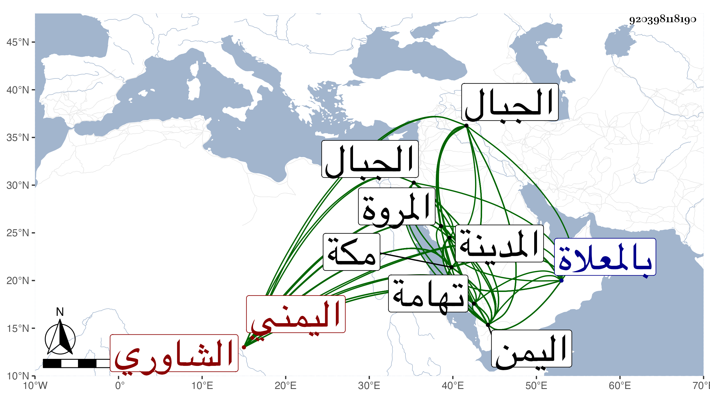

0902Sakhawi.DawLamic.ITO20230111-ara1.EIS1600.920398118190
Biography ID: 920398118190
411
عمر بن محمد بن مسعود بن إبراهيم الشاوري اليمني نزيل مكة ويعرف بالعرابي بالتخفيف والإهمال . أخذ باليمن عن أحمد الحرضي المقيم بأبيات حسين ونواحيها وكان من جلة أصحابه وعن غيره من صلحاء اليمن ثم قدم مكة في سنة إحدى عشرة فاستوطنها حتى مات لم يخرج منها إلا لزيارة المدينة النبوية غير مرة ومرة في سنة تسع عشرة إلى اليمن ورزق حظا وافرا من الصلاح والخير والعبادة وتزايد اعتقاد الناس حتى صاحب مكة حسن بن عجلان فيه بل كان يكثر من زيارته ويرجع إليه في بعض ما يقوله واتفق في سنة ست وعشرين أنه خالفه في شيء وبلغني تغير خاطره وأنه فهم أنه بذلك تتغير حاله في ولايته فبادر إلى استعطافه فقال له : قد فات الأمر ، فلم يلبث أن عزل في أوائل التي تليها بل ما تمت السنة حتى مات الشيخ في آخر يوم الأربعاء سابع عشري رمضان سنة سبع وعشرين ودفن من الغد بالمعلاة وازدحموا على نعشه وكان منور الوجه حسن الأخلاق والمعاشرة مقصودا بالزيارة والفتوح من الأماكن البعيدة ، وتاب على يده من الجبال وتهامة وغيرها من اليمن فوق مائة ألف وابتنى دارا بمكة على المروة قبل موته بسنين وبه كانت وفاته رحمه الله وإيانا ، ذكره الفاسي في مكة والتقي بن فهد في معجمه .
